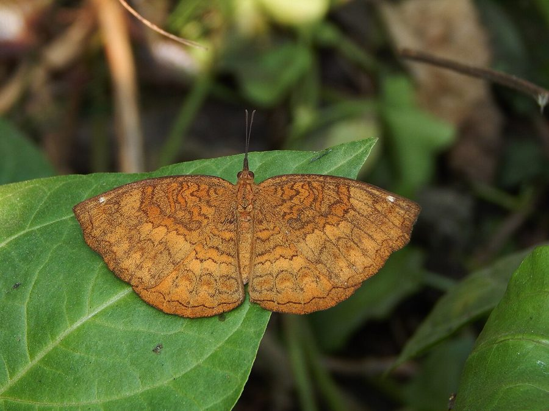

अरंडी तितलीCommon Castor
Ariadne merione · Nymphalidae · INS-0065

- Scientific name वैज्ञानिक नाम
- Ariadne merione (Cramer, 1777)
- Family कुल
- Nymphalidae
- Hindi हिंदी
- अरंडी तितली
- Local names स्थानीय नाम
- arandi titli, castor titli, bhuri titli, common castor
- Status here यहाँ की स्थिति
- native
- Movement आवागमन
- Resident, here all year
- IUCN IUCN
- not evaluated
- Review समीक्षा
- audited and independently read
When to look कब देखें
Present all year. साल भर मौजूद।
Uses and possibilities उपयोग और संभावनाएँ
Drawn from the documented uses in the profile below, where each is labelled traditional, current or a research lead. All uses →
साधारण कैस्टर तितली / Common Castor
Ariadne merione (Cramer, 1777) — Nymphalidae
साधारण कैस्टर तितली — पूर्वी उत्तर प्रदेश के खेतों, गाँवों और गली-मोहल्लों में सबसे आम और कठोर तितली। इसका रंग मटमैला, मिश्रित, भूरा-काला होता है — सैनिकों के कपड़े जैसा। इसके पंखों पर अनियमित सफ़ेद और काली रेखाएँ और दागधारियाँ होती हैं जो इसे छिपने में मदद करती हैं (camouflage)। यह तितली बहुत कठोर है, गर्मी, ठंड और कीटनाशकों को सहन कर सकती है। इसका कैटरपिलर अरहर (pigeon pea) की तरह की हरी फलियों वाले पौधों को खाता है। यह तितली सड़ी हुई चीजों, फलों और पशु गोबर पर भी बैठती है — कभी-कभी पक्षियों के घोंसलों के पास भी देखी जाती है।
Quick Identification त्वरित पहचान
| Feature | Description |
|---|---|
| Size | Medium butterfly, wingspan 50-65 mm |
| Colouration | Dull brown to dark brown, with mottled patterns of lighter and darker patches |
| Wing pattern | Irregular white or pale streaks and black bands across both wings; cryptic, blending with bark |
| Underside | Duller than upperside, with mottled grey and brown; white stripes less prominent |
| Behaviour | Slow, fluttering flight; often rests on ground or damp spots with wings spread |
| Scavenging | Often seen on rotting fruit, animal dung, damp soil |
Field tip: A plain, dull-brown, mottled butterfly, hard to see on bark or soil. Often rests with wings spread flat. Easily confused with dragonflies or moths at a distance. Look for it on the ground or on flowers, especially in damp areas and on rotting fruit.
हिंदी — कैसे पहचानें: मटमैली भूरी तितली, पंखों पर अनियमित सफ़ेद धारियाँ। गोबर या सड़ी चीज़ों पर बैठी होती है। ज़मीन पर पंख फैलाकर बैठती है।
Morphology आकारिकी
Biometrics (typical measurements for north Indian populations):
| Measurement | Range |
|---|---|
| Body length | 18-24 mm |
| Wingspan | 50-65 mm |
| Forewing length | 25-32 mm |
Wings:
- Dorsal surface: Ground colour dull brown to dark chocolate, heavily mottled with lighter patches. A series of irregular whitish or cream-coloured streaks and bands runs across the wings, creating a camouflaged appearance. Black lines and patches add complexity. The overall effect is cryptic, blending with tree bark or soil.
- Ventral surface: Paler, more uniformly grey-brown, with whitish streaks and patches, but less sharply defined than the upperside.
Body: Dark brown to black. Antennae clubbed, dark.
Sexual dimorphism: Males and females are very similar; females may be slightly larger.
Cryptic defence: The dull, mottled coloration is a camouflage adaptation, helping the butterfly blend with soil, bark and dried vegetation.
Life Cycle / Phenology जीवन चक्र
| Stage / Month | Event |
|---|---|
| April–October | Breeding; multiple overlapping generations |
| Egg | Female lays clusters of small eggs on or near host plants |
| Larva | Greenish caterpillar with black spines; 2-3 weeks on foliage; feeds on legumes |
| Pupa | Forms on plant stems or under debris; brown or green pupa |
| Adult | 3-4 weeks lifespan; often seen basking on ground or at damp spots |
| November–March | Reduced activity in cool season but can be found year-round |
हिंदी: गर्मी और बरसात में ज़्यादा; बहु-पीढ़ीय। पत्तियों पर हरा कैटरपिलर काले काँटों के साथ।
Host Plants or Prey आहार
Larval host plants:
- Various legumes (Fabaceae family): pigeon pea (Cajanus cajan), various Phaseolus species, and wild leguminous plants (Desmodium, Abrus, Mucuna).
- Reportedly also feeds on Castor (Ricinus communis) and other plants with palatable foliage.
Adult food sources:
- Rotting fruit and fermenting matter
- Animal dung and excrement (dung-feeding specialization)
- Nectar from flowers (less common)
- Sap from wounded trees
Predators / Natural Enemies शत्रु
- Birds: Flycatchers and other small insectivorous birds.
- Spiders: Web-building and jumping spiders.
- Parasitoid wasps: Lay eggs in caterpillars and pupae.
Agricultural / Human Relevance कृषि प्रासंगिकता
Minor pest status.
- Legume leaf feeding: Caterpillars can feed on pulses and pigeon pea crops, though damage is usually light and dispersed.
- Benefit: The larvae help regulate legume foliage density; the scavenging adults clean dung and decaying matter in villages.
Scavenging role. The adult's habit of feeding on dung and rotting matter makes it a useful decomposer in village and field ecosystems, though this aspect is rarely recognized.
Resilience. This species is extraordinarily resistant to pesticides and habitat disturbance, making it one of the few butterflies thriving in intensively farmed regions.
Today. Abundant in all agricultural and village habitats; one of the most common butterflies in the region.
Research direction (a lead, not a result). The mechanism by which Ariadne merione populations persist and even increase in pesticide-treated areas compared to other butterfly species would illuminate pesticide tolerance strategies and could inform integrated pest management design.
हिंदी: दालों की पत्तियों पर, पर नुकसान बहुत कम। गोबर साफ़ करती है। कीटनाशकों को सहन करती है, जहाँ दूसरी तितलियाँ मरती हैं वहाँ ये रहती हैं।
Expected Locally स्थानीय रूप से अपेक्षित
Not a field record. Written from published accounts for eastern Uttar Pradesh. No confirmed local sighting yet — if you have seen it, that is what the atlas needs.
अभी तक स्थानीय पुष्टि नहीं। यह विवरण प्रकाशित स्रोतों से है, किसी अवलोकन से नहीं।
To be expected year-round in agricultural fields, villages, and wastelands throughout Basti district, particularly abundant during the monsoon and post-monsoon seasons. It is to be expected in villages and around farm buildings wherever castor grows. Look on ground, on dung heaps, and on rotting fruit.
Distribution वितरण
Global range: Widespread across Asia, from India through Southeast Asia to Japan and Australia.
In India: Distributed throughout the country, from the coast to high elevations; one of the commonest butterflies.
In Uttar Pradesh: Abundant in all regions; perhaps the most frequently encountered butterfly in rural areas.
In Basti district / eastern UP: Ubiquitous; found in every village, farm and wasteland.
Research Questions शोध प्रश्न
Anyone can investigate these | कोई भी इन प्रश्नों की जाँच कर सकता है
- Which foods are preferred by Common Castor butterflies: rotting fruit, animal dung, or nectar? / कैस्टर तितली को सड़ा फल, गोबर, या फूल का रस — क्या सबसे प्रिय है? — Set out different food items and count butterfly visits.
- How many generations of this butterfly occur in Basti in a single year? / बस्ती में एक साल में कितनी पीढ़ियाँ होती हैं? — Track pupae and count emergence peaks.
- Can you find the caterpillars on pigeon pea (Cajanus cajan) plants? — Search pigeon pea fields in summer for caterpillars.
- Does pesticide spraying in vegetable gardens affect the abundance of this butterfly? — Compare abundance on sprayed vs. unsprayed farms nearby.
- Why does this butterfly often have torn or frayed wing edges? — Examine 20 butterflies and record wing damage rates; correlate with age.
Similar Species मिलती-जुलती प्रजातियाँ
| Species | How to tell apart | हिंदी |
|---|---|---|
| Ariadne ariadne (Angled Castor) | Slightly larger; wings more angular, with white band on hindwing | कोणदार कैस्टर — सफ़ेद पट्टी |
| Grayling butterflies (Hypanartia, Melanitis) | Larger and darker; different wing shape; less scavenging behaviour | मंद तितली — और भी भूरी |
| Brown-patched Wasplet (Pareronia) | Smaller; orange-red patches on brown base | नारंगी दाग़ की तितली |
Field rule: A plain, dull brown, mottled butterfly with irregular white streaks, often seen on the ground or on dung, is the Common Castor.
Taxonomy & Classification वर्गीकरण
Original description. Described by Cramer in 1777 in Uitlandsche Kapellen, Vol. 2, p. 83, pl. 145. Type locality is India. The genus name Ariadne comes from Greek mythology. The specific name merione also comes from Greek myth (daughter of Minos).
Subspecies. Multiple subspecies recognized. The nominate form Ariadne merione merione occurs in India.
Family and order placement. Order Lepidoptera, family Nymphalidae (brush-footed butterflies), subfamily Satyrinae (wood browns and allies).
Phylogenetic notes. Ariadne is a small genus of Asian butterflies with about 6 species, characterized by cryptic coloration and scavenging habits. They represent an evolutionary strategy successful in exploiting rotting vegetation and dung in disturbed habitats.
IUCN status rationale. Not formally assessed. Extremely abundant and widespread; no conservation concerns.
Photo Gallery फोटो गैलरी
No photos yet — add field photos to media/species/common_castor/ and run node scripts/sync_photos.js.
Wanted:
- Adult on ground showing mottled pattern
- Adult feeding on rotting fruit or dung
- Underside view
- Caterpillar on legume plant
References संदर्भ
- Cramer, P. (1777). Uitlandsche Kapellen. Vol. 2, p. 83, pl. 145. [original description]
- Kunte, K. (2009). Butterflies of Peninsular India. Universities Press, Hyderabad.
- Sawyer, P. & Lees, D. (1996). Checklist of the Satyrinae of the world. Smithsonian Contributions to Zoology, 584, 1-283.
- Pandey, A. K. (2002). On the ecology of Ariadne merione (Cramer) and Ariadne ariadne (Linné) in relation to their host plants. Indian Journal of Lepidoptera, 1(2), 34-47.
- Wynter-Blyth, M. A. (1957). The Butterflies of India. 2nd edition. Bombay Natural History Society, Bombay.
- GBIF Occurrence Data — Ariadne merione, India (2010-2025). GBIF taxon key: 7640748.
Source file: species/fauna/insects/common_castor.md